00读前一分钟 · 全文脉络（做完题再看也行）
📌 结构套路：奇闻（①②）→ 当年有多贵（③）→ 后来有多便宜、为什么便宜（④）→ 为什么钉子能拿来比（⑤）→ 作者的结论（⑥）→ 例证（⑦）。五题一段一题、严格顺序：21②、22③、23④、24⑤、25⑥⑦——①段是纯引子，不出题。
📌 本篇最值钱的一条规律：重心永远在让步的后半句，干扰项专从前半句里取。23 题 although … partly by 的两个次因各做了一个干扰项（B、D）；24 题⑤段三句都是「前半让一步 ＋ but 后半才是意思」，A 取的正是❶ 的前半句；25 题⑥❸ while it is …, it’s … 两个强调句对着放，D 取的是被让掉的「精妙技术」那半。读到 although / partly / while / but，先在心里把前半句划掉。
📌 标题里的双关：原题是「一枚古罗马钉子的价格告诉了我们什么价值」。全文 price 和 value 一路交替出现：③段说钉子 valuable（贵、稀罕），⑥⑦段说便宜的技术才最有价值——价格低 ≠ 价值低，这是作者真正想说的反差。
📌 和 2023 T1 比一比：两年的 Text 1 都出自《金融时报》；2023 是新闻报道（两方＋一位专家，靠引语推进），2024 是专栏随笔——作者第一人称出场（⑥段 I am an economist, after all），前五段都在铺垫，观点压在倒数第二段。
01原文精读
🟡 黄色高亮 = 重难点词/短语，点击右侧出卡片 ｜ 蓝色虚线 = 长难句，点击跳到精析 ｜ 每段「意」= 段落意译 ｜ 选中任意其他单词浮出「查有道」 ｜ 原文由你的浏览器从原卷识别成文字（首次约 3 秒，之后秒开）；「原卷对照」可逐句看扫描原图、改识别错字
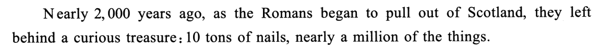
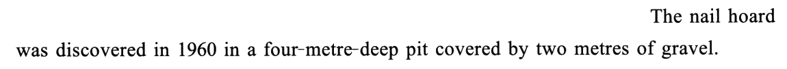
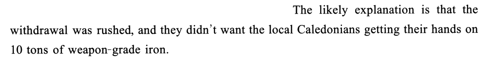
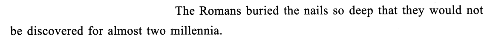
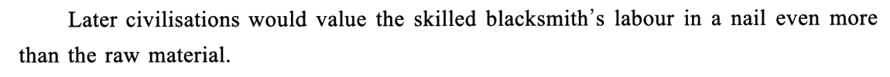
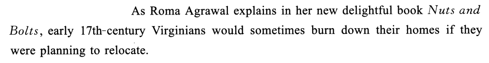
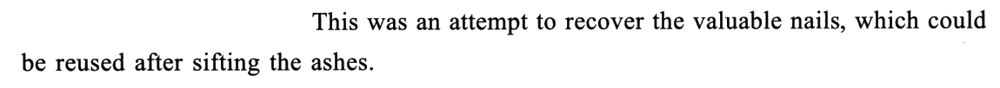
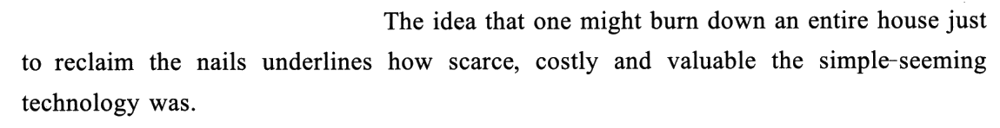
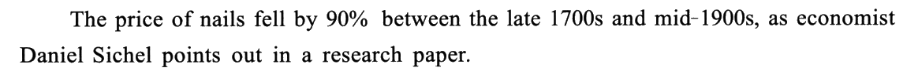
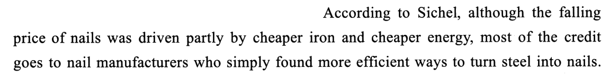
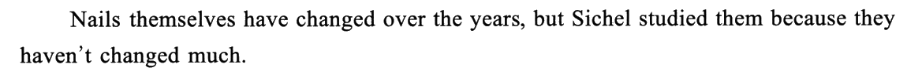
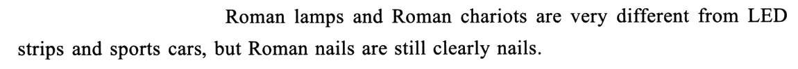
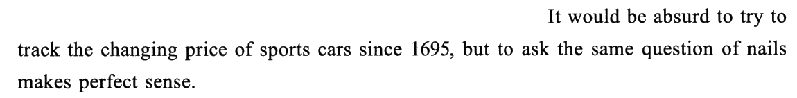
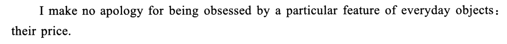
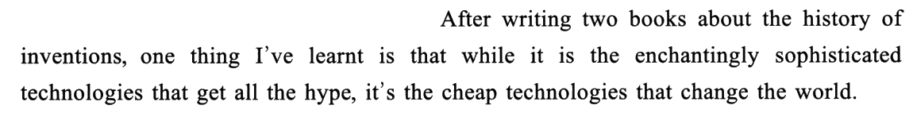
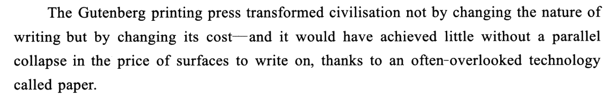
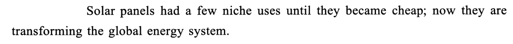
02题目与解析（点选项即判 · 再看解析）
因果细节21. The Romans buried the nails probably for the sake of ______.
干扰项：A 借的是③❸ could be reused——那是 17 世纪弗吉尼亚人烧房取钉的目的，不是罗马人的；何况②❸ 说埋到「近两千年都没人发现」，罗马人根本没打算回来取。B 从①❷「四米深坑、上盖两米砾石」脑补出「隔绝氧气防生锈」——原文写埋得深，是为了说明藏得严，一个字没提锈。C 借①❶ a curious treasure——「珍宝」是今天的人看它的眼光，不是罗马人埋它的动机。
技巧：见到「Why …? The likely explanation is …」这种自问自答，答案就在自答句里，不用往别处找；再看题干的问法——问「目的」（for the sake of / in order to / so as to），就从原因里挑出主动想达到的那一层，处境、背景不算。
📕 与书解析的商榷：书说要「明确罗马人掩埋钉子的两重原因」，对；可以再补一句——两重原因里只有一重能回答「为了什么」，这正是题干用 for the sake of 而不用 because of 的用意。
例子作用22. The example of early 17th-century Virginians is used to ______.
干扰项：A thriftiness（节俭）是从「回收再用」推出来的常识联想——烧掉一整栋房子恰恰不节俭，作者要说的是钉子贵，不是人省。B 是本题的近邻陷阱：skilled blacksmith’s labour 就在❶，但「看重铁匠的手艺」≠「铁匠的社会地位高」，例子的落点是钉子，全段没提铁匠的地位。C 有一点原文根据——❶ 的 Later civilisations 和罗马人确实构成暗中对比（罗马人在乎的是 10 吨铁这种原料，后人在乎的是手艺）；但题问的是弗吉尼亚人这个例子的用途，例子里只有「后人」这一方，没有对比的另一方。
技巧：例子题先找例子前后的议论句：前一句是论点、后一句常是作者的点评（underlines / shows / suggests / This is why）。本篇连信号词都给了：The idea that … underlines ——「这个念头说明了」。
⚠️ 盲做时 B、D 排过一下：两项都能在③段找到词，判据是例子证明的对象——烧房子是为了钉子，不是为了铁匠。
📕 与书解析的商榷：书判 C 为「扭曲①句内涵」，说两种文明都重视钉子、只是侧重不同——这个读法对；但 C 的硬判据不在扭曲，而在偷换了题问的对象：❶ 句确有对比，例子没有。
因果细节23. What played the major role in lowering the price of nails after the late 1700s?
干扰项：B 和 D 正是 although 从句里那两个次因：D 是 cheaper iron 的直接改写（原料降价），B 是 cheaper energy 的变形，还多偷换了一个 new（原文只说能源便宜，没说新能源）——两项都把 partly 偷换成了 major。C 用常识编：制钉商多了 ⟹ 竞争激烈 ⟹ 降价，原文一个字没提竞争；原文的因果链是「制法更高效 → 成本降 → 价格降」。
技巧：见到 partly by A and B, most of the credit goes to C，题干只要问 major / main / chiefly，答案必在 C；A、B 一定会被做成干扰项——这是命题人现成的两个坑。
🗞 出处印证：Sichel 论文原文的结论就是「降价的最大份额来自制钉业的（多要素）生产率增长，材料降价居次」——A 用的正是经济学里的原词 productivity。
📕 与书解析的商榷：无分歧。书的「技巧总结」把 was driven partly by X and Y 与 most of the credit goes to Z 并列讲，正是本题的全部要害。
段落主旨24. It can be learned from Paragraph 5 that nails ______.
干扰项：A 取的正是❶ 被让掉的前半句 Nails themselves have changed over the years，又把「有变化」夸大成「经历了许多技术改进」——「变化很大」的是灯和车，不是钉子。C 把研究动机读反：原文说正因为钉子没怎么变才研究它，没有拿它跟别的日常物件比「研究得多不多」。D 把❸ makes perfect sense（拿钉子追价格说得通）误读成「钉子是最重要的发明」——那是⑥⑦段谈「便宜技术改变世界」时才沾得上的话，而且作者也没这么说钉子。
技巧：段落主旨题碰到「but 句连排」，只把每个 but 后面的半句串起来读；前半句全是给干扰项准备的原料。
📕 与书解析的商榷：书判 A 只说它来自❷ 的灯具和车辆——其实❶ 的前半句（钉子本身也变过）才是 A 最直接的诱因：它让「钉子有技术改进」看上去有原文撑腰。
段群主旨25. Which of the following best summarises the last two paragraphs?
干扰项：B 借⑥❷ I am an economist 编出「经济成功」——作者是经济学家，不等于他在谈经济效益；他谈的是价格如何决定技术的影响。C 借 change the world 编出「定义人们对世界的认识」——原文是技术改变世界本身（文明、能源体系），不是改变「认识」；而且 C 说的是笼统的 Technology，抹掉了「便宜的」这个关键限定。D 取的是⑥❸ 被 while 让掉的那半——原文只说精妙技术被大肆炒作，没说它们从哪来，更没说由小发明演变而来。
技巧：段群主旨题先分清谁是观点、谁是例子：⑦段两个例子都在说「变便宜 ⟹ 改变世界」，回头⑥段找到同样意思的那句就是观点句。强调句 it is … that 对着放时，while 后面那一句是让步。
📕 与书解析的商榷：无分歧。书指出⑦段是对⑥段观点的「举例论证」，判 C 时点出原文把尖端技术和低价技术区分开、不能一概而论——这条正是 C 的硬伤。
03长难句精析（正文蓝色虚线句）
- 主干：
they left behind a curious treasure——主谓宾俱全；left behind 是「留下、遗留」，宾语太长，所以副词 behind 提到宾语前面。 - 句首两个状语：时间
Nearly 2,000 years ago＋as引导的时间状语从句（「当……时」）。began to pull out of Scotland：pull out of 是「撤出、退出」，和②❷ 的 withdrawal 是同一件事的动词说法与名词说法。 - 冒号后是同位语，揭开「奇特的宝贝」是什么：
10 tons of nails；后面再挂一个同位语换个量词说一遍——nearly a million of the things（重量 → 数量）。the things 是口语化的回指，等于 the nails。
- 主干：
The likely explanation is that …——主系表，that 引导表语从句，从句才是信息。 - 表语从句里两个并列分句，用
and连接：①the withdrawal was rushed（处境）；②they didn’t want之后的部分（意图）。21 题问 for the sake of（目的），只认②。 want sb doing sth：「愿意／容忍某人做某事」，否定式多见——didn’t want the locals getting … 带着「不愿眼看着他们……」的意味，比 want sb to do 更强调动作正在发生。get one’s hands on sth：习语「弄到手」；weapon-grade iron：「武器级的铁」，复合形容词 名词-grade ＝「……级别的」（如 food-grade 食品级）。
- 主干：
Later civilisations would value A even more than B。A ＝the skilled blacksmith’s labour in a nail，B ＝the raw material。 - would 不是虚拟，是「过去惯常／过去将来」：站在罗马时代往后看，「后来的文明会更看重……」。
labour in a nail：介词 in 很传神——劳动是凝结在钉子里的；对比的另一头 the raw material 指铁。这句埋着一个暗对比：罗马人在乎的是 10 吨铁（原料），后人在乎的是手艺——22C 的诱惑就从这里来。
- 主干：
The idea … underlines how …——主语 idea，谓语 underlines（强调、说明），宾语是 how 引导的宾语从句。 - 主语后紧跟
that one might burn down an entire house一直到reclaim the nails：同位语从句，说明 idea 的内容（that 在从句里不作成分）。just to：「仅仅为了」，带着作者的惊讶。 - 宾语从句
how scarce, costly and valuable后接主语the simple-seeming technology和was：三个形容词前置的感叹式结构，正常语序是 the technology was scarce, costly and valuable。 simple-seeming：「看似简单的」，形容词-seeming 构词。本句就是 22 题的答案句：technology ↔ nail-making technology，三个形容词 ↔ preciousness。
- 主干：
most of the credit goes to nail manufacturers——句首According to Sichel交代出处。 although引导让步状语从句：the falling price of nails was driven partly by两个原因cheaper iron and cheaper energy。partly 给次因定了级。the credit goes to sb：「功劳归于某人」——credit 熟词僻义，不是「信用」。most of给主因定了级：partly 对 most，命题人的 major role 就从这里来。- 定语从句
who simply found more efficient ways修饰制钉商；ways to turn steel into nails不定式作 ways 的定语，turn A into B「把 A 变成 B」。simply：「只不过是」——作者在强调「没靠什么高深的东西，就是制法更高效」。
- but 连接两个并列分句，结构故意不对称：
- 前半
It would be absurd to try to track …——it 是形式主语，真正的主语是后面的不定式 to try to track the changing price of sports cars since 1695；would 表示「（假如真去做）会是」的推测。 - 后半
to ask the same question of nails直接放在句首当主语，谓语makes perfect sense——不定式直接作主语，不再用形式主语。前后一换句式，把对比的重心落在后半。 ask the same question of nails：ask sth of sb/sth「向……提出（问题）」，这里 of 不是「……的」。
- 主干：
one thing I’ve learnt is that …——主语 one thing（后接省略 that 的定语从句 I’ve learnt），系动词 is，that 引导表语从句。句首After writing two books about the history of inventions是时间状语。 - 表语从句内部：
while引导让步从句 ＋ 主句，两边都是强调句 it is … that：让步it is the enchantingly sophisticated technologies that get all the hype；主句it’s the cheap technologies that change the world。 - 强调句检验法：去掉 it is 和 that 句子仍完整——the cheap technologies change the world。两个强调句对着放 ＝ 作者在纠正一个流行看法：大家以为是 A，其实是 B。25 题答案取后者，D 取前者。
get all the hype：「被大肆宣传、出尽风头」；enchantingly：副词修饰形容词，「精妙得令人着迷」。
- 破折号前后是两个并列分句，用
—and连接。 - 前句 主干
The Gutenberg printing press transformed civilisation，后接方式状语not by changing …, but by changing its cost——not A but B 结构，重心在 B（成本）。 - 后句
it would have achieved little without …——含蓄虚拟：without 短语相当于条件句「要不是有……」，主句用 would have done 表示与过去事实相反（实际上有纸，所以成事了）。 a parallel collapse in the price of surfaces to write on：collapse 熟词僻义「（价格）暴跌」；parallel「同步的」；surfaces to write on ＝ 可以在上面写字的东西（不定式作定语，介词 on 不能丢）。后接thanks to引出原因：an often-overlooked technology called paper。
04词汇复盘（点卡片看详情）
05可搬进作文/翻译的素材
本篇话题——技术、成本、普及才是真正的进步——正对大作文里的「科技改变生活」「小事物大作用」「创新与普惠」类题目；也能给「不要只追求高大上」这类议论垫一个论据。英文例句都是按原文句式自拟的，只借骨架。